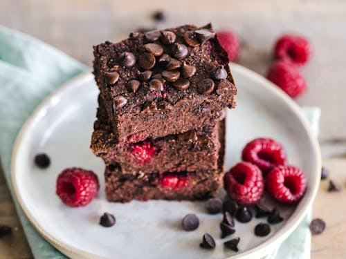

Brownie Recipe
Easy homemade brownies will have you ditching store-bought mixes for good. Loaded with decadent chocolate flavor, these brownies are gooey and thick with crispy edges.
Prep Time: 10 minutes
Cook Time: 35 minutes
Servings: 16 brownies
Calories: 349

Equipment
- 8" square baking pan
- Mixing bowls
Ingredients
- 1 cup unsalted butter (226g)
- 2 cups granulated sugar (400g)
- ¾ cup unsweetened cocoa powder (75g)
- 3 large eggs room temperature
- 1 tablespoon vanilla extract
- 1 teaspoon salt
- 1 cup all-purpose flour (120g)
- 1½ cups semisweet chocolate chips (270g)
Instructions
- Preheat the oven to 350°F. Lightly grease an 8x8-inch baking pan with baking spray and line it with parchment paper.
- In a large microwave-safe bowl, melt the butter in the microwave in 20-second intervals stirring between each one until fully melted, about 2 minutes. Add the sugar and cocoa and whisk vigorously for 30 seconds. Whisk in the eggs, vanilla, and salt.
- Add the flour and chocolate chips and mix together with a spatula until just combined. Spread the batter into the prepared pan. (You can sprinkle the top with more chocolate chips, if desired.)
- Bake for about 35 to 40 minutes, inserting a toothpick into the center to check doneness, and removing it with several moist crumbs for fudgy brownies or only a few crumbs for cakey brownies. Let the brownies cool completely in the pan before slicing.
Notes
- Use a metal baking pan. Using a metal baking pan will have your easy brownies ready in about 35 to 40 minutes. If you use a glass baking pan, they will likely take 5 to 10 minutes longer to bake. Glass baking pans also conduct heat very differently to metal ones, and your brownies may sink in the center as a result. Metal also helps create those crave-worthy crisp brownie edges!
- Line the baking pan. Lining the baking pan with parchment paper makes it so easy to remove the brownies, and makes clean-up a breeze. The brownies will stick to the pan if you do not use parchment paper.
- Use a bigger pan for thinner brownies. You can use a 9x9-inch pan if you prefer thinner brownies.
- Amp up the chocolatey flavor. For richer chocolate flavor in this fudgy brownie recipe, use Dutch-processed cocoa powder or add 1 tablespoon of instant coffee or espresso powder to the melted butter mixture.
- Measure the flour. Using too much flour results in dry homemade brownies. The best way to measure flour accurately is by using a kitchen scale. If you don’t have one, fluff your flour with a spoon, sprinkle it into a measuring cup, and use a knife to level it off.
- Add nuts. For some texture, add ½ cup of toasted nuts to the batter along with the chocolate chips. Chopped walnuts or pecans are always a great choice for brownies.
- Add a chocolate chip topping before baking. If you want to add even more chocolate, you can sprinkle some chocolate chips over the top of the batter just before you bake the brownies.
- Don’t over-bake the brownies. Your brownies are done when the center is just set and the top starts to crack. They will continue to firm up after you remove them from the oven and cool.
- Dust the brownies with powdered sugar. For visual appeal and a hint more sweetness, lightly dust the brownies with powdered sugar once they’ve cooled down.
For more in-depth information and image references, visit PreppyKitchen